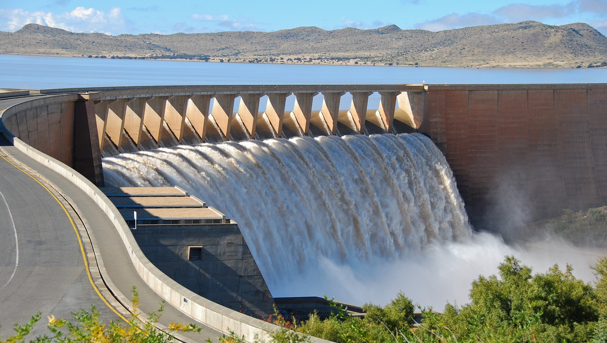
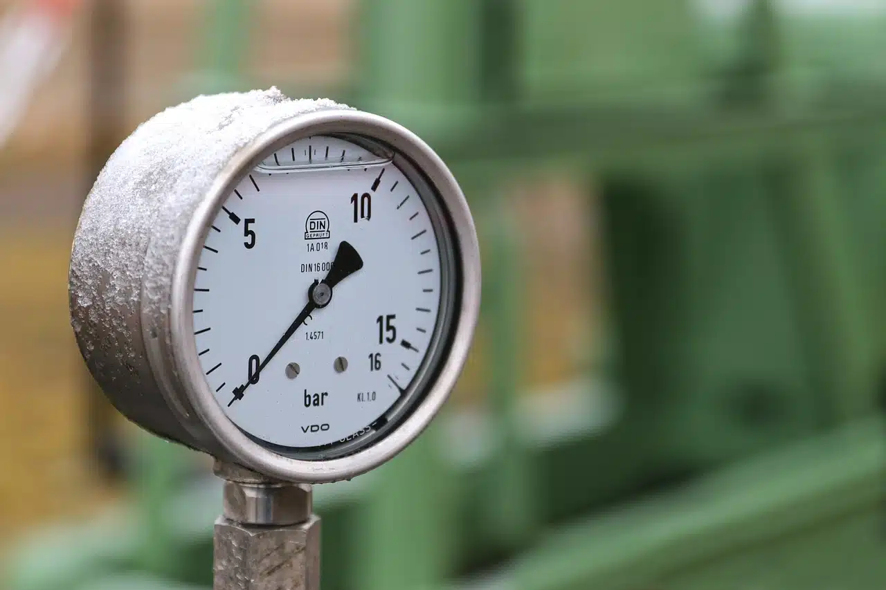
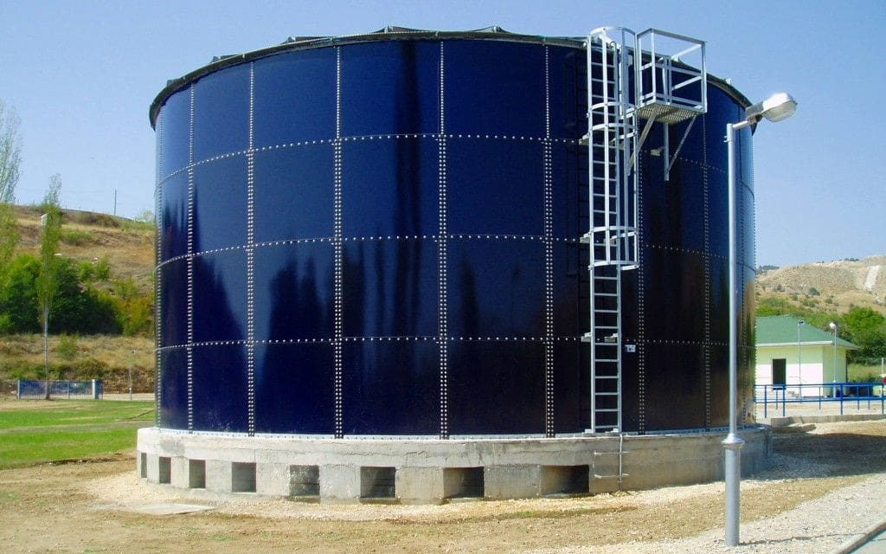
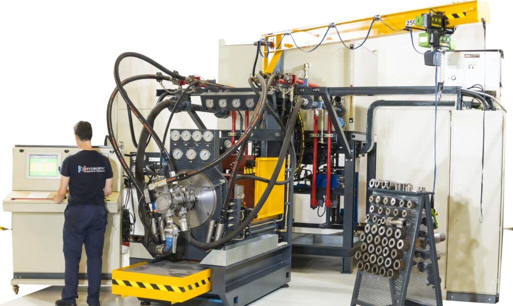
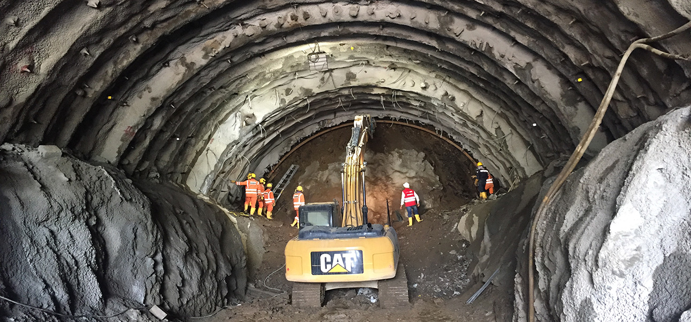
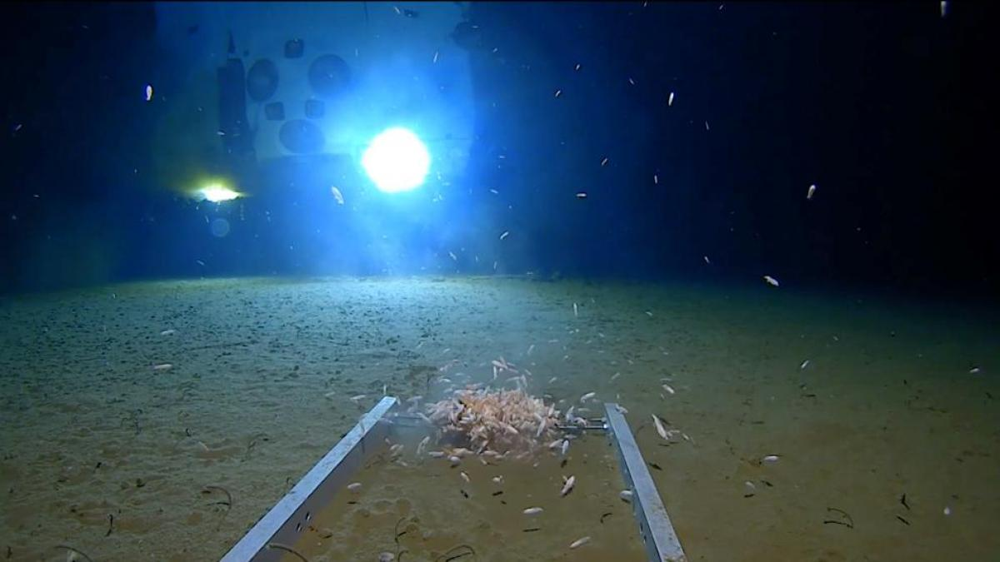

APLICACIONES DE LA HIDROSTATICA
Diseño de presas y embalses
La hidrostática se usa para calcular la presión que el agua ejerce sobre las paredes y el fondo de una presa o embalse. Cuanto más profundo es el agua, mayor es la presión que actúa sobre las estructuras. Esta presión debe ser considerada al diseñar la resistencia de las presas para evitar su colapso.

Principio de los Barómetros
El barómetro es un instrumento que se basa en los principios de la hidrostática para medir la presión atmosférica. Al observar el cambio en la altura de un líquido (como mercurio) en un tubo cerrado, se puede determinar la presión del aire en un lugar específico.

Sistemas de transporte de líquidos (tuberías)
Los ingenieros utilizan los principios de la hidrostática para determinar la presión a lo largo de las tuberías que transportan líquidos. Esto es fundamental para evitar fugas o rupturas, especialmente en sistemas de agua potable, petróleo o gas.
Flotación y diseño de barcos y submarinos
En la construcción de barcos y submarinos, la hidrostática es fundamental para determinar la flotación. Según el principio de Arquímedes, un objeto flotará en un líquido si el peso del líquido desplazado por el objeto es igual al peso del objeto. Esto se utiliza para calcular el diseño y la estabilidad de embarcaciones y submarinos.
Análisis de tanques de almacenamiento
La hidrostática es esencial en la evaluación de la presión ejercida por un líquido dentro de un tanque cerrado o abierto, lo cual es importante para la seguridad y el diseño de tanques de almacenamiento de líquidos como agua, petróleo, productos químicos, entre otros.

Dispositivos hidráulicos
Los principios de la hidrostática se utilizan en sistemas hidráulicos (como prensas y frenos hidráulicos), donde un líquido en reposo transmite la presión de una pequeña área a una mayor área, amplificando una fuerza aplicada y permitiendo mover objetos pesados o aplicar presión con mayor facilidad.

Presión en los órganos humanos (Medicina)
La hidrostática también tiene aplicaciones en la medicina, especialmente en la circulación sanguínea. La presión ejercida por el fluido (sangre) en los vasos sanguíneos y el corazón se puede estudiar aplicando principios hidrostáticos para comprender fenómenos como la hipertensión o los trastornos circulatorios.

Diseño de estructuras subterráneas
La hidrostática es fundamental para el diseño de túneles, minas y otras estructuras subterráneas, ya que se debe considerar la presión ejercida por el agua que se encuentra en el suelo o en los acuíferos cercanos. La acumulación de agua puede afectar la estabilidad de estas estructuras.

Medición de profundidad de cuerpos de agua
En la exploración submarina, se usan dispositivos como ecosondas que funcionan a partir de principios hidrostáticos para medir la profundidad de los océanos y cuerpos de agua. Esto es importante para la navegación, la pesca y la investigación oceanográfica.

Presión en la atmósfera y su impacto en la meteorología
El estudio de la presión atmosférica, que se basa en los principios de la hidrostática, es esencial para predecir fenómenos meteorológicos. La variación de la presión en diferentes puntos de la atmósfera genera corrientes de aire que provocan el clima que experimentamos.